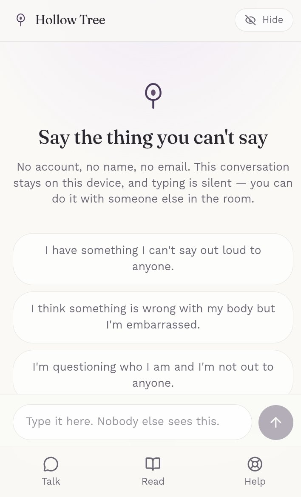
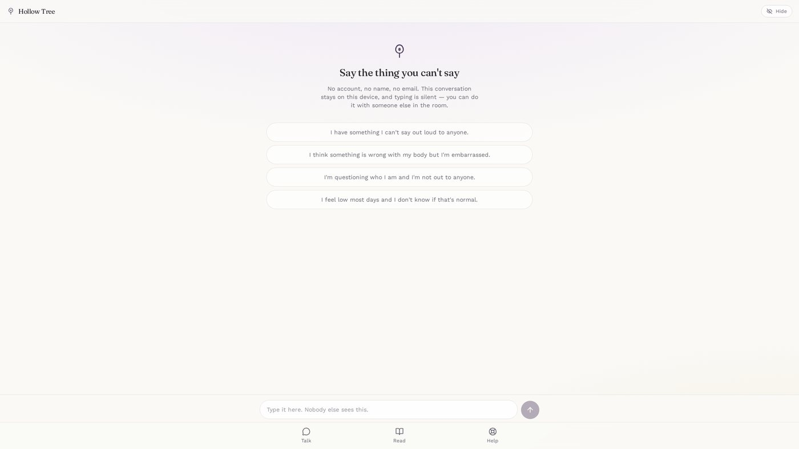

Small AI products I build to learn how product decisions play out. Each one is written up as a product story: who it is for, how it works, and what I did.
Many people carry health questions they feel unable to ask anyone, about their bodies, their identity or their mental health, because of stigma. Hollow Tree is a private AI companion for exactly that moment. It gives confidential, non-clinical guidance grounded in vetted health sources, with no sign-up.
[Your role on the team, for example product, marketing, design or research. Who else was on it?]
[Your part in two or three sentences: for example the problem framing, who it is for, the copy, the safety rules, the decoy screen, testing.]
A working prototype, still in progress. [Add the hackathon result or any feedback you got, if there is one.]


This is a demonstration prototype and not medical advice. Please do not enter personal details.
I'm always up for a conversation about products, storytelling, or the next hard puzzle worth solving.
Connect on LinkedIn →